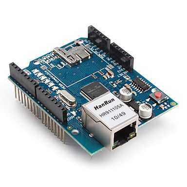
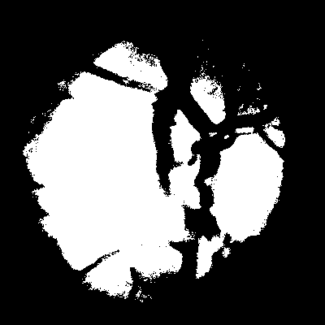

SISMAC: Sistema de Monitoramento Automatizado de Colméias
Ricardo Bruno
Resumo
Neste trabalho foi desenvolvido um sistema distribuído para monitoramento de colmeias com abelhas tendo o objetivo de disponibilizar aos apicultores informações sobre a temperatura interna dentro da colmeia, trazendo assim mais comodidade no manejo das abelhas.
O sistema foi construído utilizando a infraestrutura Internet das Coisas (IoT) como modelo. A arquitetura desse sistema consiste em sensores de temperatura, que terão função de receptores ambientais; uma placa arduino, como o receptor dos dados colhidos pelos sensores; plataformas de IoT para recebimento e processamento dos dados e uma aplicação cliente para receber as informações referentes à temperatura da colmeia.
Componentes
Os componentes de hardware utilizados neste projeto, foram sensores de temperatura DS18B20, uma ethernet shield w5100 e uma placa arduino mega. O sensor DS18B20 é capaz de medir temperaturas que vão de -55º C até +125º C com uma acurácia de ± 0.5º C. Este sensor vem envolto por uma cápsula de metal que o protege do ambiente externo sem interferir na sua medição essa proteção extra torna o sensor perfeito para ser utilizado em uma colmeia que é um ambiente hostil a circuitos eletrônicos.
O Mega 2560 é uma placa de microcontrolador baseada no ATmega2560. Possui 54 pinos de entrada/saída digitais (dos quais 15 podem ser utilizados como saídas PWM), 16 entradas analógicas, 4 UARTs (portas seriais de hardware), um oscilador de cristal de 16 MHz O painel Mega 2560 é compatível com a maioria dos shields projetados para o Uno e os antigos painéis Duemilanove ou Diecimila.
O arduino Ethernet Shield w5100 permite que uma placa arduino se conecte à internet. O w5100 fornece uma pilha de rede (IP) através de TCP e UDP. Ele suporta até quatro conexões de soquete simultâneas. O shield Ethernet se conecta a uma placa arduino usando cabeçalhos longos que se estendem através do escudo. Isso mantém o layout do pino intacto e permite que outro escudo seja empilhado no topo. O Ethernet Shield possui uma conexão RJ-45 padrão, com um transformador de linha integrado e Power over Ethernet habilitado.
Plataformas de IoT
Este projeto utilizou plataformas de IoT para armazenamento e processamento dos dados na nuvem. Para comunicação com arduino foi utilizada a plataforma thinger IO essa plataforma oferece uma infra-estrutura de IoT escalável e pronta para conectar vários de dispositivos. Uma das principais vantagens do thinger IO é a possibilidade de conexão com as principais plataformas eletrônicas: arduino, Raspberry Pi, Intel Edison.
Para análise e processamento dos dados foi utilizada a plataforma Keen IO. A Keen foi projetada para oferecer aos desenvolvedores flexibilidade e extensibilidade de uma pilha de análise personalizada, sem o incômodo e risco de gerenciar a grande infraestrutura de dados. A keen oferece APIs prontas para produção, dando a possibilidade de o desenvolvedor realizar análise robustas de seus dados menos tempo.
Arquitetura
Como a arquitetura desse projeto utiliza infraestrutura IoT, o mesmo deve conectar alguma COISA a internet, neste caso uma colmeia de abelhas onde os dados de temperatura são coletados e por um sensor de temperatura conectados a um arduino que irá formatar e enviar esses dados para a plataforma thinger IO utilizada para comunicação com o arduino e armazenamento dos dados provenientes dele. após isso os dados são repassados para a plataforma Kenn IO que irá realizar a análise e processamento dos dados, após esse dados serem tratados podem ser disponibilizados ao apicultor e é justamente isso que acontece através da aplicação cliente que recebe os dados em forma de medidas e gráficos, a arquitetura pode ser vista na Figura abaixo.
Arquitetura do SISMAC
DiagCard: Arquitetura Móvel para Diagnóstico de Arritimias Cardíacas
Rodrigo Leal & Ivan Filho
Resumo
Neste trabalho, foi planejada e desenvolvida uma arquitetura distribuída móvel para monitoramento de frequências cardíacas tendo como objetivo de disponibilizar um método de prevenção e monitoramento de batimentos cardíacos com baixo custo.
O sistema foi construído utilizando a infraestrutura Internet das Coisas (IoT) como modelo. A arquitetura desse sistema consiste em uma pulseira como sensor de batimentos cardíacos, e um smartphone como receptor e processador dos dados colhidos pelo sensor cardíaco.
Componentes
Os componentes de hardware utilizados neste projeto foram a pulseira Mi Band 2 da Xaiomi e um smartphone para executar a aplicação. A pulseira Mi Band 2 é capaz de medir temperaturas em tempo real, além também de poder armazenar os passos e calorias gastas pelo usuário. Este sensor é adequado para monitoramento cardíaco por ser portável, o que proporciona uso em muitos lugares e atividades.
Plataformas de IoT
Este projeto se em uma arquitetura de Internet das Coisas. A pulseira Mi Band 2 possui bluetooth, e com essa conexão foi feita a comunicação com o aplicativo. Para colhimento e processamento dos dados foi desenvolvida uma aplicativo Android que se baseia em uma técnica de diagnóstico cardíaco apresentada no American College of Cardiology.
Arquitetura
A arquitetura móvel de IoT proposta é dividida entre sensor e receptor que também é capaz de processar o diagnóstico da saúde cardíaca do usuário. A Figura abaixo apresenta a arquitetura descrita.
Arquitetura do DiagCard.
Sistema para Controle de Água dos Canteiros da UFPI
Antônio Alves, Antônio Junior & Laise Campos
Resumo
O sistema irá tratar o desperdício de água que acontece nos canteiros da Universidade Federal do Piauí- Campus Picos, devido notarmos quando os jardineiros vão aguar os jardins ao redor dos blocos da UFPI, acontece muito desperdício de água, isso só aumenta os gastos do campus, ainda que não teria necessidade de desperdiçar tanta água já que poderiamos fazer isto de forma sustentável.
Dai, surgiu a ideia do nosso projeto em fazer um sistema para tratar este problema, sistema este que é composto por programação em arduino, android, varios sensores para leitura dos contextos necessários e funcionará da seguinte forma:
No contexto inicial procuramos entender como funciona os períodos de aguar as plantas, para desenvolver a programação de acordo com as necessidades, a planta não poder ser regada em determinadas horas do dia, então será de suma importância utilizar sensores de temperatura, pelo fato de que caso a temperatura esteja alta não poderá aguar a planta porque pode ocasionar das plantas murcharem.
Construímos também uma bomba d'água para que seja aguado automaticamente quando necessitar, será utilizado um rele, ele é o responsável por joga uma corrente e dar força ao motor onde a hélice gira indicando que tudo está ocorrendo corretamente e faz com que a água que se encontra no reservatório seja levada para os canteiros, terá também os sensores de temperatura que irá ler a temperatura ambiente, nos canteiros, sensores de umidades para detectar os estado do solo, contendo os seguintes contextos: Umidade alta e pouca umidade, porque contendo estas informações dos sensores poderemos saber qual canteiro está precisando ser aguado, assim quando a umidade estiver pouca os sensores indicam para poder ser acionada a bomba d'agua vinda do reservatório(caixa), pra ser aguado.
Na caixa de água terá um sensor de bomba de nível mais conhecido como “boia”, que irá detectar o nível de agua da caixa. Por exemplo se a bomba de nível tiver 0 então a caixa está “seca”, então tem que reabastecer, caso a bomba de nível esteja em 1 então contém água na caixa. Na caixa terá também para ajudar detectar o nível de água um sensor ultrasonic que indica que a caixa está cheia então não precisa mais encher, o sensor ira evitar que caixa transborde evitando mais perda de água.
FERRAMENTAS UTILIZADAS
Arduino Uno
É uma plataforma de prototipagem eletrônica de hardware livre e de placa única, projetada com um microcontrolador Atmel AVR com suporte de entrada/saída embutido, uma linguagem de programação padrão, a qual tem origem em Wiring, e é essencialmente C/C++. O objetivo do projeto é criar ferramentas que são acessíveis, com baixo custo, flexíveis e fáceis de se usar por artistas e amadores. Principalmente para aqueles que não teriam alcance aos controladores mais sofisticados e de ferramentas mais complicadas.
A placa pode ser alimentada pela conexão USB ou por uma fonte de alimentação externa, conforme exibido na figura abaixo:
Figura 1. Arduino Uno
A alimentação externa é feita através do conector Jack com positivo no centro, onde o valor de tensão da fonte externa deve estar entre os limites 6V. a 20V., porém se alimentada com uma tensão abaixo de 7V., a tensão de funcionamento da placa, que no Arduino Uno é 5V, pode ficar instável e quando alimentada com tensão acima de 12V, o regulador de tensão da placa pode superaquecer e danificar a placa.
A seguir são exibidos os conectores de alimentação para conexão de shields e módulos na placa Arduino UNO:
Figura 2. Conectores de alimentação da placa
• IOREF - Fornece uma tensão de referência para que shields possam selecionar o tipo de interface apropriada, dessa forma shields que funcionam com a placas Arduino que são alimentadas com 3,3V. podem se adaptar para ser utilizados em 5V, e vice-versa.
• RESET - Pino conectado a pino de RESET do microcontrolador. Pode ser utilizado para um reset externo da placa Arduino.
• 3,3 V. - Fornece tensão de 3,3V. para alimentação de shield e módulos externos. Corrente máxima de 50 mA.
• 5 V - Fornece tensão de 5 V para alimentação de shields e circuitos externos.
• GND - Pinos de referência, terra.
• VIN - Pino para alimentar a placa através de shield ou bateria externa. Quando a placa é alimentada através do conector Jack, a tensão da fonte estará nesse pino.
Protoboard
A protoboard tem a possibilidade de montar, desenvolver e testar diversos circuitos eletrônicos, tudo sem ter que soldar os componentes. Sendo assim, a protoboard é o lugar mais recomendado para montar este circuito e efetuar todos os testes necessários. Uma outra utilização muito comum é interligar sensores e circuitos integrados (CIs) aos diversos microcontroladores disponíveis como, por exemplo, o Arduino. Na imagem abaixo mostra as três áreas disponíveis nas protoboards, a área para montagem de CIs (parte central da protoboard), a área para distribuição da alimentação elétrica (duas linhas superiores e inferiores) e a área para montagem dos componentes (colunas). As linhas azuis representam as ligações internas da protoboard, ou seja, internamente elas já estão interligadas.
Figura 3. Protoboard
Sensor DS18B20
É um sensor digital de temperatura com características interessantes para uso com o Arduino, que são o baixo custo e a facilidade de uso. O sensor pode efetuar leituras com precisão de até ±0,5 ºC, e enviar as informações para o microcontrolador utilizando apenas 1 fio.
Figura 4. Sensor DS18B20
Sensor de umidade do solo Higrômetro
O sensor de umidade do solo consiste em 2 partes: uma sonda que entra em contato com o solo, e um pequeno módulo contendo um chip comparador LM393 (datasheet), que vai ler os dados que vêm do sensor e enviá-los para o microcontrolador, no caso, um Arduino Uno. Como saída, temos um pino D0, que fica em nível 0 ou 1 dependendo da umidade, e um pino de saída analógica (A0), que possibilita monitorar com maior precisão usando uma porta analógica do microcontrolador. O módulo tem um led que indica quando a placa está sendo alimentada corretamente, e outro que acende quando a saída digital for acionada. A sensibilidade do módulo é ajustada por meio do potenciômetro existente na placa.
Figura 5. Sensor de umidade do solo Higrômetro
Módulo Rele
O relé 5V pode ser também usado com AVR, PIC, Raspberry, 8051, ARM ou até mesmo o seu circuito eletrônico personalizado. Usando dois pinos do módulo relé arduino, pode controlar cargas como lâmpadas, motores, fechaduras e eletrodomésticos, desde que a corrente de operação não ultrapasse 10 A (ampéres). Cada relé desse módulo suporta cargas de até 10 A, em 125 VAC, 250 VAC ou 30 VDC. Leds indicadores mostram o estado do relé (ligado/desligado) em cada canal. O módulo já contém todo o circuito de proteção para evitar danos ao microcontrolador, e possui baixa corrente de operação.
Figura 6. Módulo Rele
Bomba d'água
Material utilizado para construção da bomba:
• Duas tampas de garrafa pet;
• Meio metro de mangueira de nível;
• Um motor de 5V;
• Plástico (utilizado para fabricar a hélice);
• Cola quente e supercola;
FABRICAÇÃO:
Inicialmente foi feito dois buracos em uma das tampas (na parte superior e na lateral), um para encaixar um pedaço da mangueira de nível (que foi dividida em dois pedaços), que será encaixado no furo da lateral, e o outro para encaixar o motor, que vai encaixar na parte superior da tampa, e na outra tampa foi feito somente um furo para encaixar outro pedaço da mangueira de nível. Após ser feito os furos na primeira tampa, o motor foi encaixado no furo e foi colado com supercola, e na superfície entre a tampa e motor utilizou-se bastante cola quente para não ocorre vazamento de água.
Um pedaço do plástico foi cortado em forma circular e feito um furo no centro para encaixar o motor, cortou-se mais quatro pedaços pequenos de plástico em forma de retângulo e colado no outro pedaço circular para formar a hélice, após montar a hélice, foi encaixada a mesma no motor por dentro da tampa de garrafa pet, usou-se cola quente para que a mesma não desencaixe do motor (é importante observar a rotação da hélice e verificar se a mesma está girando sem nenhum empecilho).
Depois de ter feito isso tudo pegou-se a outra tampa de garrafa pet, e cola encaixando na outra tampa, para não ocorrer vazamento utiliza-se bastante cola quente. Depois de encaixar uma tampa na outra, pega outro pedaço da mangueira de nível e cola encaixando no buraco da outra tampa, novamente utilize bastante cola quente para não ocorrer vazamento. Fizemos o teste com água para ver se a bomba funcionou, para ligar o motor utilizeilizamos inicialmente uma bateria de celular, após o teste com a bateria, liagamos a bomba no rele, para o funcionamnto do sistema de irrigação.
Figura 7. Bomba d'água
Sensor Ultrasônico
É um componente muito comum em projetos com Arduino, que permite fazer leituras de distâncias entre 2 cm e 4 metros, com precisão de 3 mm. Pode ser utilizado simplesmente para medir a distância entre o sensor e um objeto, como para acionar portas do microcontrolador, desviar um robô de obstáculos, acionar alarmes, etc.
Figura 8. Sensor Ultrasonic
Sensor de Nível de Líquidos ao Arduino
É um sensor feito de material plástico (PP, segundo o fabricante), composto de uma haste na qual desliza um cilindro feito de material flutuante. Esse cilindro possui um ímã que aciona um sensor magnético no meio da haste, que por sua vez fecha o contato dos 2 fios que saem do sensor, ou seja é uma boia com fios.
Figura 9. Sensor de Nível de Líquidos
FUNCIONAMENTO DO PROJETO
O vídeo abaixo mostra o projeto funcionando, porém na fase inicial. Terá também uma maquete representando os canteiros da federal onde o projeto arduíno será montado sobre ela para similar mais realidade na apresentação final.
CASINHA - CAsinha Social Integration Network for Home Assistant
Diego Fernando & Bruno
Resumo
CASINHA é um projeto que utiliza os conceitos de IoT para fazer controle e monitoramento de ambientes pela rede mundial de computadores.
Projeto CASINHA.
O projeto é todo construído a partir de tecnologias livres e neste tópico será detalhado o que quais são elas, como também suas respectivas importâncias para o projeto.
Problema
Seguir os conceitos da IoT não é nada fácil quando pensamos fazer algo em maior escala, como colocar o serviço a disposição de todos através de Internet, pensando nisso, o projeto ponderou alguns pontos problemáticos relevantes para o desenvolvimento:
Uma plataforma que todos possam usar;
Melhor controle dos itens a serem controlados no ambiente;
Deva ser real-time;
Não seja só controlar componentes no ambiente.
Proposta
A partir deste itens, chegamos a conclusão de criar algo similar a uma rede social. Nesta, os usuários poderiam se cadastrar e fazer o uso de uma forma fácil, rápida e intuitiva.
Protocolo MQTT e suas filas de mensagens
Primeiramente falaremos como é a comunicação dos dispositivos via internet.
Optamos por utilizar neste projeto, brokers de mensagens. Mais especificamente usamos o protocolo MQTT. Este é um protocolo bastante atual e é voltado especificamente para a IoT por ter a característica de consumir pouquíssima banda na transferência dos dados.
O protocolo MQTT herda todos os paradigmas dos brokers de mensagens, mais uma de suas características principais é o uso de QoS na aplicação divididos em 3 níveis.
Mesmo tendo um broker para fazer a comunicação, a ideia principal do projeto é que tudo seja feito através da internet. Daí foi descoberto o CloudMQTT, que é um servido de broker em nuvem mantido pela grandiosa Amazon.
CloudMQTT, foi a "bala de prata" para o projeto por ser gratuito até 10 conexões além de fornecer serviços para WebSockets, ou seja com ele podemos fazer clientes Web.
Fila de mensagens do CloudMQTT.
Ok. Até este ponto já temos a comunicação entre os dispositivos via internet. Se você lembra que eu falei sobre WebSockets anteriomente, saiba então que na verdade eles não serão usados a baixo nível. Isso por que o protocolo MQTT tem clientes web escritos em JavaScript que abstraem toda a camada de WebSockets para um nível maior.
Sistema embarcados
Neste tópico será mostrado o que foi usado como hardware no projeto e como foi usado.
Microcontrolador Arduíno
Este é o principal embarcado do projeto, pois tudo passa por ele e ele é responsável pela atuação dentro do ambiente.
Arduíno é uma placa de prototipagem eletrônica de código aberto. O projeto, surgido na cidade de Ivrea, na Itália, em 2005, inclui hardware e software livre e visa oferecer ferramentas adaptáveis e de baixo custo para a criação de projetos interativos de diversas ordens.(CANALTECH)
Para o projeto casinha, ele além de se conectar com o broker, também faz a função do controle dos sensores a atuadores dentro do ambiente.
Placa Arduíno MEGA.
Um nó na rede com Ethernet Shield
O módulo Ethernet Shield é um componete auxiliar para a placa Arduíno. Basicamente, este módulo transforma o Arduíno em um nó na rede local. Consequentemente, este módulo permite o Arduíno se conectar ao broker do CloudMQTT.

Placa Arduíno/Ethernet Shield.
Computação distribuída com módulos Xbee's
Os Xbee's são módulos sem fio que suportam envios de quadros pequenos com latência mínima e pouco consumo de energia. Ideais em projetos como os que utilizam controle na agricultura, automação residencial, sistemas de alarmes e supervisão industrial.
A característica dos Xbee's de serem alto organizáveis permite que a rede se alto mantenha, organizado e fazendo enlaces com qualquer dispositivo compatível a sua tecnologia. O padrão ZigBee vem da conotação de como as abelhas se organizam e comunicam na polimerização, de forma comuta e alto organizada.
A função do Xbee no projeto é distribuir o processamento dentro do ambiente, isso quer dizer que ao invés de ter fiações de longa distância para um único Arduíno, são colocados Xbee's em cada cômodo, por exemplo e este fica responsável pelos atuadores e sensores deste local.
Módulo Xbee.
Os módulos ZigBee atual em três tipos de topologias diferentes:
Topologia ZigBee.
Em uma rede Xbee pode haver componentes como coordenadores, roteadores e os "end devices". Os coordenadores operam como um nó que atua como inicializador de um canal de cominação gerenciando os nós. Os Roteadores são encaminhadores de mensagens entre nós de uma rede. Os "end devices" são como dispositivos finais que só recebem mensagens vindas de outros nós.
Este projeto foi projetado em conjunto a topologia Mesh no modo roteador que permite que o canal seja inicializado automaticamente na entrada de novos dispositivos ou perdas de dispositivos. Dessa forma a múltiplas possibilidades de autossuficiência e otimizar o trafego de dados.
Para que os módulos operem de forma correta faz se necessário uma configuração previa através do XCTU da empresa Digi XBee® Ecosystem que permite a programação do firmware dos módulos. Recomendamos atenção nesta sessão pois os módulos são programados direto no firmware, qualquer imprevisto ou erro no upload do firmware pode ocasionar perda do dispositivo.
Software XCTU.
Plataforma CASINHA e CASINHAApp
Para que o usuário tenha acesso ao seu ambiente de qualquer lugar do mundo bastando apenas estar conectado a internet, foi desenvolvida a plataforma CASINHA.
A plataforma abre a possibilidade por exemplo se o usuário estiver sem computador ou celular de pedir o computador do amigo para ter acesso a casa.
Plataforma CASINHA.
A plataforma CASINHA, foi desenvolvida essencialmente na linguagem Python usando a framework Django. A plataforma está em um servidor de testes chamado Heroku que fornece um serviço PaaS para apicações via Git.
Além disso, para guardar os arquivos enviados dos usuários na plataforma, usamos a tecnologia S3 da Amazon Web Services que tem uma cota gratuita de uploads, excelente para testes.
Dentro da plataforma CASINHA foi construída também uma API Rest. Esta API é consumida por um aplicativo mobile chamado CASINHAApp.
O CASINHAApp é um aplicativo Android construído em PhoneGap/Cordova que tem como função principal a função de fazer o controle dos atuadores do ambiente.
Aplicativo Android CASINHAApp.
Esquema de funcionamento
O esquemático a seguir mostra como é feita toda a comunicação para liga um led, por exemplo.
Esquema ativação de atuador.
Existem 3 níveis de QoS no protocolo MQTT, mas todos eles são em relação as checamento das mensagens ao destino Ethernet Shield e não do Xbee que é o destino final da mensagem. Para resolver esta situação resolvemos implementar uma própria política de QoS, no qual se a mensagem chegasse ao Xbee, ele retorna uma mensagem a ponte Ethernet Shield e este é responsável por publicar ao broker uma mensagem de resposta. Veremos a seguir uma imagem que representa uma resposta.
Esquema de resposta do atuador.
Uma introdução a Rede Social CASINHA
Após ter efetuado o cadastro ou feito login, o usuário entrará na página inicial. Nesta são listados, tanto os ambientes que o usuário criou, como também os ambientes em que o usuário foi adicionado com participante.
Ainda nesta página, o usuário tem acesso ao seu próprio histórico desde que entrou para a plataforma. Esta lista é gerada em forma de relatório em PDF.
Outras opções também se mostram interessantes para personalização do perfil do usuário. Dentre elas estão:
Editar foto de perfil;
Editar foto de capa do perfil;
Adicionar foto de perfil ao ambiente;
Página do ambiente.
Para criar um novo ambiente, o usuário deve informar os dados do broker na Web, como id do usuário, senha, host e porta.
Quando o usuário entra em um ambiente ele se conecta ao broker automaticamente. Com isso, dependendo do seu nível perante ao ambiente (se é participante ou administrador), ele pode ter mais ou menos opções.
A timeline mostra todas as ações que foram efetuadas no ambiente por todos os participantes. Também são exibidos os recados que os participantes podem deixar no ambiente.
Sobre o painel de controle, falaremos dele na sessão de comunicação.
A imagem abaixo mostra como é feita a criação de um tópico e de uma mensagem no ambiente.
Opções do ambiente.
Cabe ao administrador gerenciar os participantes do ambiente, para isso o item "Gerenciar participantes" faz as regras de acesso. Ou seja, vai ter acesso ao ambiente quem estiver participando de acordo com o administrador.
Participantes do ambiente.
Ainda na sessão de gerenciamento do ambiente, temos o gerenciamentos dos atuadores e sensores. Neste o usuário poderá criar quantos dispositivos quiser e definir seus respectivos tópicos para utilização da plataforma. Ao criar um novo atuador, a plataforma automaticamente irá se inscrever no respectivo tópico, a fim de obter informações em tempo real.
Atuadores/sensores do ambiente.
Agora você deve estar se perguntando: Como o aplicativo se comunica com a plataforma?
E eu lhe respondo: REST!
Devevos saber primeiramente que RESTs não são stateless. Isso quer dizer que elas não guardam sessão de forma alguma. Uma estratégia bastante usada é guar dar informações de login no próprio banco de dados do cliente.
Pensando nisso, como estamos usando conceitos da Web para aplicações móveis usamos o LocalStorage, que é um pequeno banco de dados que geralmente ficam no navegador.
Também foi pensado na demora que ia ser toda vez que o usuário iniciar o app, fazer a visita ao banco de dados e trazer as informações. Para isso, em vez das informações de login serem guardadas no banco, é o JSON com as informações de respostas que é salvo. Ou seja, a API REST só é visitada no primeiro uso quando o usuário é obrigado a informar seu username, senha e chave da casa.
A chave da casa sempre é fornecida após a criação da casa pela aplicação Web. Ela foi criada para direcionar o usuário da aplicação móvel para o ambiente que ele quer controlar. Assim, ao fazer login pelo aplicativo, o back-end irá verificar se este usuário é realmente participante do ambiente da chave informada. Se for, ele vai diretamente para a tela de painel de controle.
Abaixo temos um exemplo de login.
Fazendo login no CASINHAApp.
Funcionamento
Para testes foram usados:
Um roteador D-Link;
Uma placa Arduíno Mega;
Uma placa Arduíno Uno;
Dois módulos Xbee;
Uma placa de molde para Xbee;
Um módulo Arduíno/Ethernet Shield;
Uma protoboard;
Três leds;
Um sensor de temperatura;
Quatro resistores;
Um cabo de RJ45 desencapado (para confecção de jumpers de longa distância);
Vários jumpers curtos.
O Arduíno Mega é a peça central, pois ele é o dispositivo conectado a internet e consequentemente conectado ao broker de mensagens. Todas as informações passam por ele antes de chegar ao destino final. Nele estão conectados o módulo Ethernet Shield, que o transforma em um nó na rede e o um dos módulos Xbee, que envia as informação recebidas pelo Arduíno para os outros Xbee's.
Embarcado conectado ao broker.
O Arduíno Uno é responsável por efetuar ação num abiente específico, ele está conectado a um módulo Xbee para que receba as informações originadas do Xbee conectado ao broker. Todos os atuadores e sensores ficam conectados a este embarcado.
Embarcado conectado aos atuadores e sensores.
O vídeo abaixo mostra alguns dos nossos testes.
Apresentação do projeto CASINHA.
Análise de Desempenho de uma Sistema Distribuído para Segmentação de Imagem da Retina
Marcus Vinícios & Edson Damasceno
Resumo
Neste trabalho, apresentamos o desenvolvimento de um sistema mobile para segmentação de imagens
da retina em computação em nuvem. O sistema funciona primeiramente com a seleção de uma imagem
no dispositivo móvel, para posteriormente ser enviada ao servidor para realizar a segmentação da imagem.
Optou-se por utilizar esse arquitetura devido a limitação dos dispositivos móveis, como bateria,
processamento, e memória. Assim ao utilizar um servidor ele terá a funcionalidade de relizar as
operações de processamento digital de imagens e retornar os resultados, diminuindo assim as operações
no dispositivo móvel otimizando a aplicação sem comprometer os resultados.
Para o desenvolvimento da aplicação que se basea na arquitetura cliente-servidor, ou seja,
o cliente requisita e detém dados, e o servidor processa e faz a manutenção da informação.
Assim utilizamos as seguintes tecnologias:
Linguagem java e SDK android
Middleware rabbitmq
Linguagem de programação python
Biblioteca OpenCV para manipulação de imagens
A linguagem de programação java foi para programar em android para desenvolver a aplicação
mobile contanto com a IDE() Android Studio. O rabbitmq é um middle de troca de mensagens para
manter o controle, segurança, e entregas corretas das menssagens entre cliente e servidor.
Foi utilizado um middleware por estar envolvido diferentes plataformas e linguagens de programação
envolvidos, sendo necessário para a interação entre elas. A linguagem de programação python com a
biblioteca OpenCV é utilizada pora o processamento digital de imagens e geração de gráficos sobre
o desempenho da aplicação.
Funcionamento
No lado cliente com o celular android, o usuário pode selecionar a imagem em seu celular, e ao selecionar
um botão fica apto a enviar ao middleware no sevidor . No servidor a imagem é realizado por um pré-processamento
para a eliminação de ruídos, para posteriormente ser segmentada e retornada ao cliente. A imagem abaixo demostra
a interface no lado cliente.
Abaixo tem-se o resultado de uma segmentação com o algoritmo de segmentação Otsu

Abaixo tem-se o resultado de uma segmentação com o algoritmo de segmentação K-means
Aplicativo para Auxiliar o Atendimento de Restaurantes
Boaz Sousa & Maria de Fátima
O bom atendimento ao cliente deve ser prioridade de qualquer negócio,
especificamente em um restaurante, deve existir uma agilidade no momento de transferir
o pedido do cliente à cozinha, no modo tradicional isso custa tempo, a demora está
relacionada especificamente ao deslocamento do atendente até a cozinha onde o Chefe
precisaria saber o pedido para então servir. Com essa necessidade, apresentamos um
Sistema Distribuído para um Restaurante que possa agilizar o atendimento ao cliente.
Na maioria dos estabelecimentos das cidades enfrenta-se uma dificuldade que é
os serviços destinados no atendimento aos clientes. É fato que muitos restaurantes
possuem uma certa desorganização e demora no atendimento, que terminam insatisfeitos
pela falta de um atendimento rápido e de qualidade. Esse problema dá-se também por
conta da grande quantidade de clientes nos estabelecimentos, torna-se uma tarefa bastante
demorada o fato de os garçons precisarem escrever cada pedido, realizar a entrega ao
chefe de cozinha e retornar para o atendimento aos demais clientes.
O Sistema Distribuído para Restaurante, funcionaria assim, os atendentes teriam
aplicativos Android, os quais seriam responsáveis por recolher os pedidos dos clientes,
esses dados iriam diretamente para um servidor, que estaria localizado na cozinha, sendo
visualizados pelo Chefe, e imediatamente os pratos seriam feitos, isso diminuiria o tempo
de entrega do pedido ao cliente, pois, o mesmo seria recolhido e enviado diretamente a
cozinha, no caso onde ficaria o servidor.
Inicialmente os atendentes (garçons) recolhem algumas informações para o
aplicação Android, como o número da mesa, a quantidade de pessoas em uma mesa, o
mesmo tem acesso ao cardápio digital, que selecionará os pedidos feitos pelo cliente e em
seguida conclui o pedido, enviando-o ao servidor. O aplicativo Android terá uma
funcionalidade na qual o atendente avisará que a mesa está liberada, após a efetuação do
pagamento. Utilizaremos a arquitetura Cliente/Servidor, pois é uma arquitetura na qual o
processamento da informação é dividido em módulos ou processos distintos. Um
processo é responsável pela manutenção da informação (servidores) e outros responsáveis
pela obtenção dos dados (os clientes). Além disso, utilizaremos o Message Broker.
Como usar:
Tela de Login, pode logar o atendente para o menu principal e cadastrar um novo atendente
Tela Menu Principal, onde poderão ser feitos pedidos e também será possivel liberar a mesa
Tela Pratos Adicionais, serão escolhidos os pratos e informados ao aplicativo
Tela Bebidas, serão escolhidas as bebidas e informadas ao aplicativo
Tela Sobremesas, serão escolhidas as sobremesas e informadas ao aplicativo
Tela de Liberar a Mesa, é possivel liberar mesas
Tela de Cadastro, será cadastrado um novo atendente